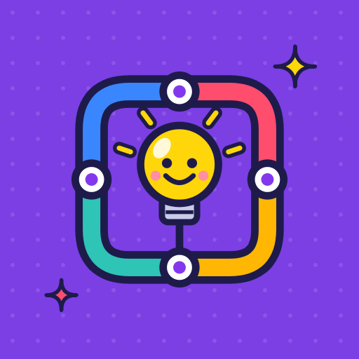
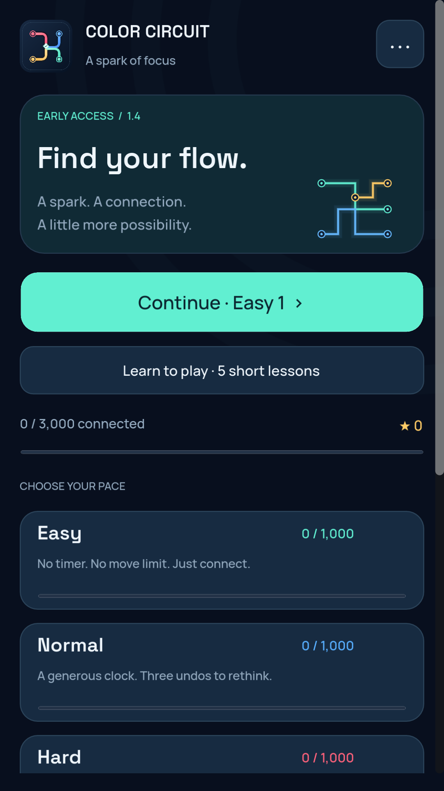
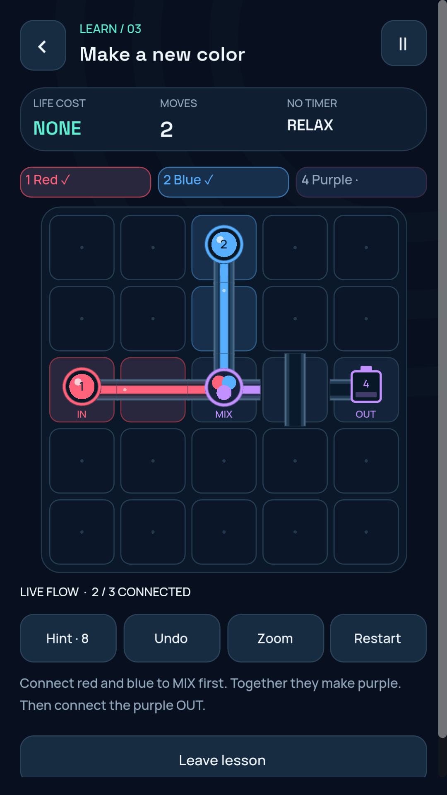
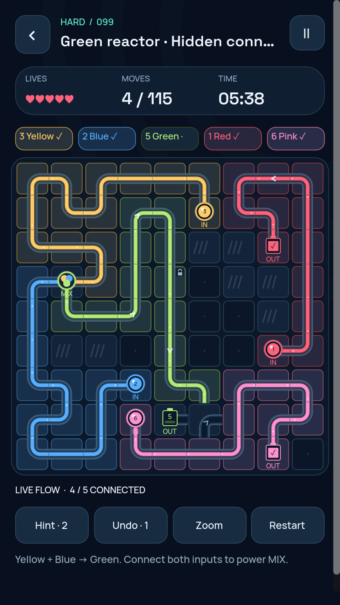
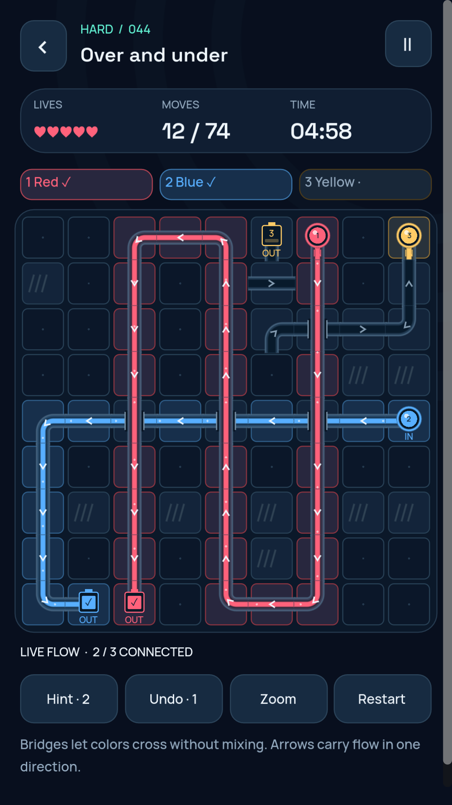
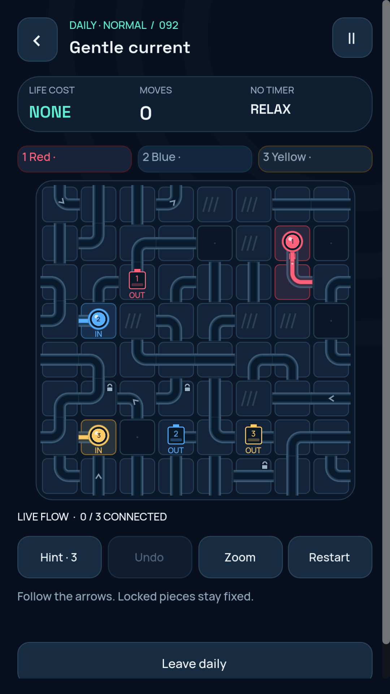
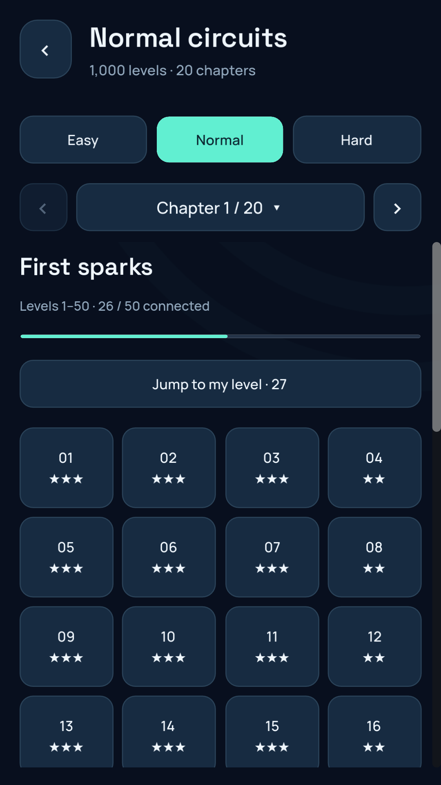

Learn by playing
Five small lessons explain rotation, multiple colors, mixing, bridges and one-way arrows. Learn without spending lives or changing campaign progress.
Rotate circuits, mix colors and connect every source to its output. Explore 3,000 puzzles across Easy, Normal and Hard.

This page previews the 1.4.0 update. Google Play availability depends on your tester access and release approval; an older approved version may still be served.
Five small lessons explain rotation, multiple colors, mixing, bridges and one-way arrows. Learn without spending lives or changing campaign progress.
Reverse your last turn. Normal allows three undos per attempt and Hard one. Undo refunds a move, never time.
Daily boards and completion marks are saved. Practice is untimed, spends no lives and has no missed-day penalty. Daily puzzles rotate by UTC day.
1,000 levels. No timer, move-limit failure or life cost. Take your time and try another route.
1,000 levels with generous thinking time, a move budget and three undos. Timed challenges share five regenerating lives.
1,000 levels with tighter clocks, strict move budgets and one undo. Combine mixing, crossing tracks, fixed clues and arrows.
One life returns every 15 minutes, including while the game is closed. Easy, lessons and free practice remain available without lives.
Actual screenshots from the 1.4.0 game renderer. Tap an image to view it larger.






Follow visible powered flow, use hints and zoom, and enable numbered color labels. Adjust sound, motion, vibration and battery saver. Campaign puzzles and saved progress work offline. No game account is required.
This testing build uses demo ads only for eligible adult sessions. Purchases are disabled. Your coarse age-range choice is remembered on this device; younger and unknown-age choices receive no advertising or consent-service initialization.
Use the in-game feedback panel to copy an optional report, then choose whether to email it to mzagamingsupport@gmail.com. Nothing is sent automatically. Please avoid adding unnecessary personal information.